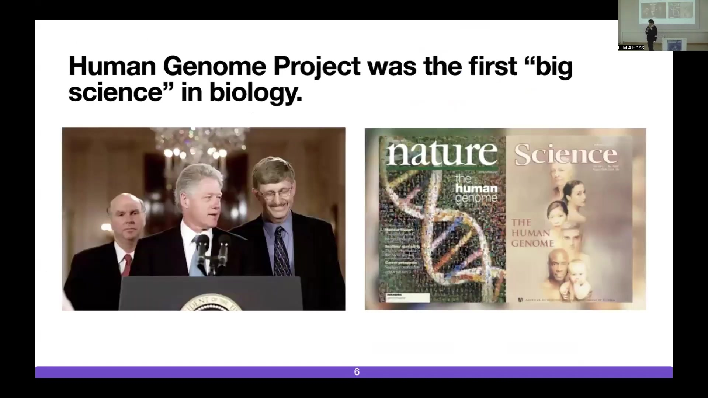
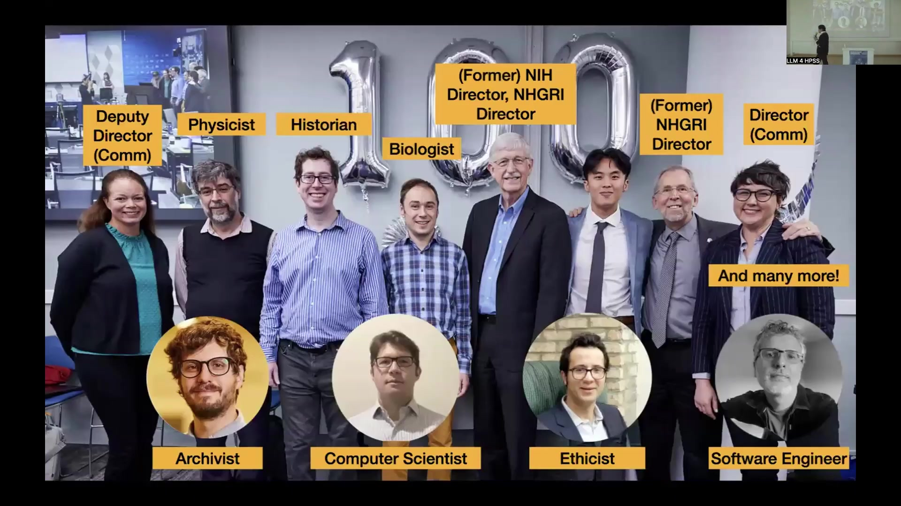
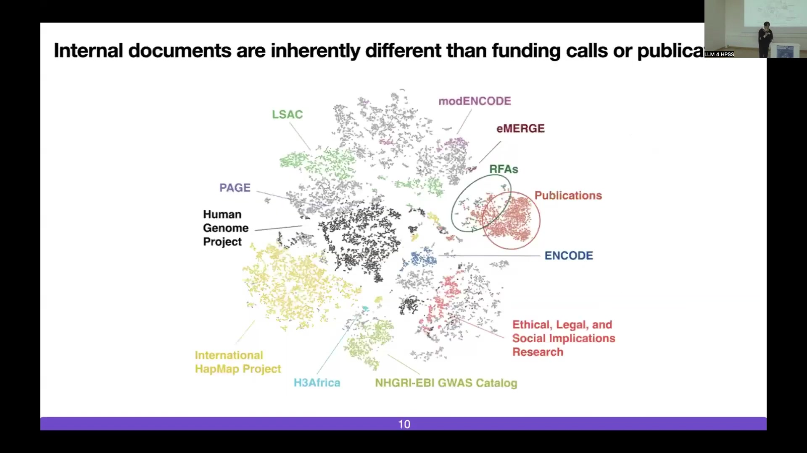
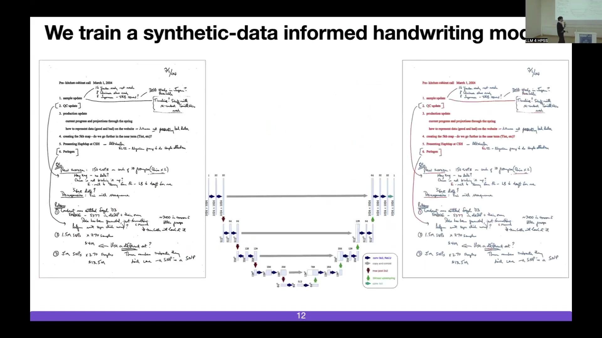
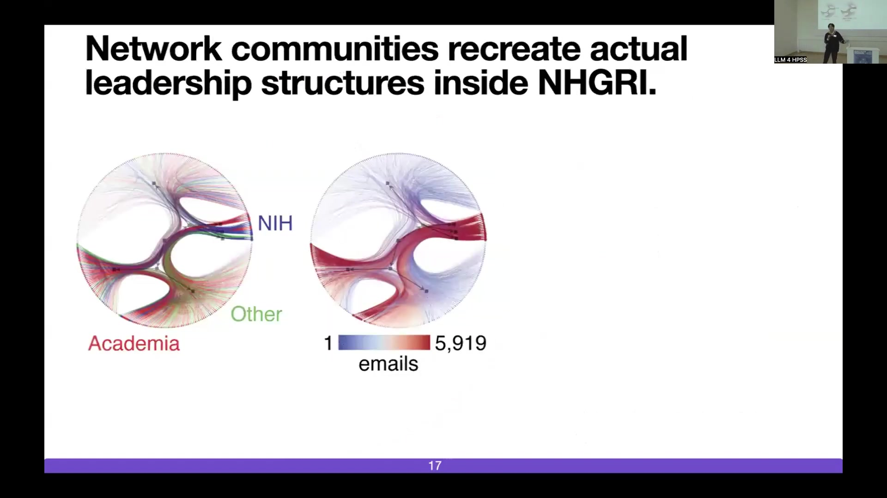
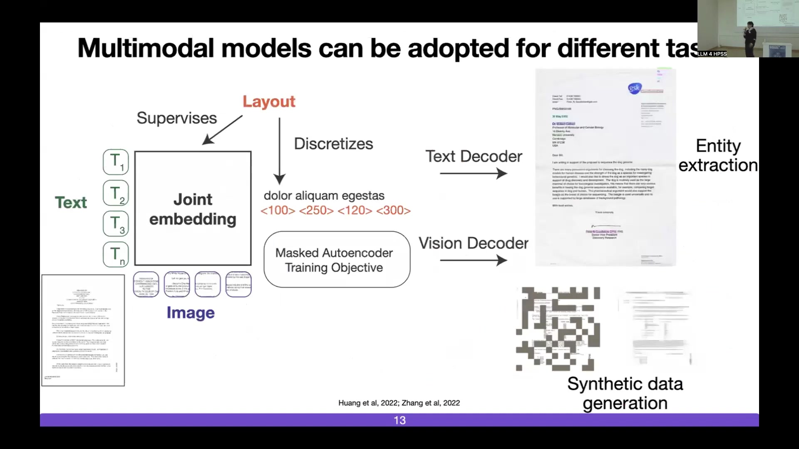
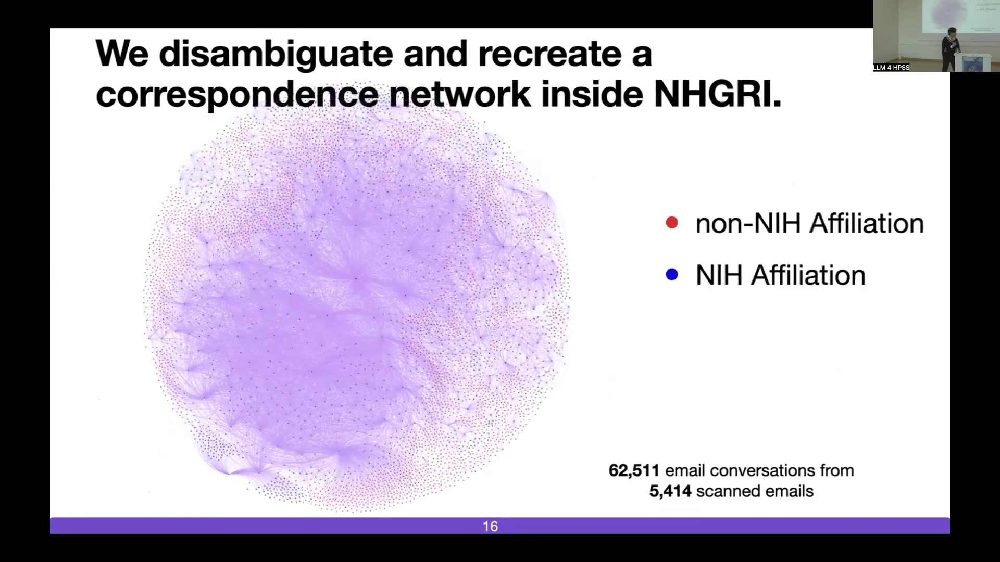

Unlocking Science’s Hidden Dynamics: A Computational Approach to Archival Research
Overview
Researchers delve into the intricate complexities of science funding, moving beyond conventional analyses of publications and grants. Their work explores the internal processes of funding agencies, offering a nuanced perspective. The National Human Genome Research Institute (NHGRI) serves as a pivotal case study, given its central role in the Human Genome Project and its recognised innovative capacity within the National Institutes of Health (NIH).
An interdisciplinary team, comprising historians, physicists, ethicists, computer scientists, and former NHGRI leadership, meticulously analyses the institute’s extensive born-physical archive. This remarkable collection contains over two million pages of internal documents, including meeting notes, handwritten correspondence, presentations, and spreadsheets. To manage and interpret this vast dataset, investigators have developed advanced computational tools.
These tools include a bespoke handwriting removal model, leveraging U-Net architectures and synthetic data. This innovation significantly improves Optical Character Recognition (OCR) whilst enabling separate analysis of handwritten content. Furthermore, multimodal models combine vision, text, and layout modalities for tasks such as entity extraction and synthetic document generation. Such capabilities prove crucial for training classifiers and ensuring Personally Identifiable Information (PII) redaction.
Case studies vividly demonstrate the power of these methods. One reconstructs email correspondence networks within NHGRI during the International HapMap Project, revealing informal leadership structures like the “Kitchen Cabinet” and analysing their brokerage roles. Another models funding decisions for organism sequencing, incorporating biological, project-specific, reputational, and linguistic features to understand factors influencing success, thereby highlighting phenomena such as the Matthew Effect.
The overarching aim involves transforming born-physical archives into accessible, interoperable digital knowledge. This endeavour seeks to inform policy, enhance data accessibility, and address significant scientific questions about how science operates and innovation emerges. The consortium extends this approach to other archives, including federal court records and seismological data, actively seeking partners to engage with their newly funded initiative: “Born Physical, Studied Digitally.”
17.1 Limitations in Understanding Science Funding through Public Data

State-sponsored research has profoundly shaped the scientific landscape since the Second World War. It operates under a social contract where public funds aim to yield societal benefits through policy, clinical applications, and technological advancements. Scholars in the science of science traditionally analyse this enterprise by examining publicly accessible data, primarily scientific publications and grant awards. Such analyses have indeed offered valuable insights into phenomena like the long-term impact of research, optimal team sizes, the genesis of interdisciplinary fields, and patterns of career mobility amongst scientists.
Nevertheless, relying solely on scientific articles presents a skewed and incomplete understanding of the scientific endeavour. Equating bibliometrics with the entirety of scientific activity constitutes an oversimplification of its inherent complexity. Researchers can achieve a more profound comprehension by investigating the underlying processes, rather than focusing exclusively on the often-flawed representation provided by published outputs.
Delving into these processes allows for the exploration of critical questions. For instance, does scientific inquiry shape funding priorities, or do funding mechanisms dictate the direction of science? Within the innovation pipeline, stretching from initial ideation to long-term impact, where do innovative ideas flourish, where do they spill over into other domains, and, crucially, where do they falter? Published articles seldom document failed projects, obscuring a significant portion of the scientific journey. Furthermore, understanding how funding agencies offer support beyond monetary grants and identifying potential biases in funding allocation remain central to a comprehensive view. The interplay between federal agencies, grants, scholars, knowledge creation, and eventual public benefit involves intricate pathways, including cooperative agreements, technology development feedback loops, and community engagement.
17.2 The Human Genome Project: A Paradigm of “Big Science” in Biology

The Human Genome Project (HGP) stands as a seminal example of “big science” in biology, drawing parallels with Netpi-funded investigations into large-scale particle physics research. Launched with the ambitious goal of sequencing the entire human genome, the HGP mobilised tens of countries and thousands of researchers, marking a new era for biological inquiry. This colossal undertaking garnered public attention far exceeding that of previous biological research, which often focused on model organisms like Drosophila and C. elegans in laboratory settings.
Its legacy endures profoundly; a vast majority of contemporary biological research, especially omics methodologies, depends critically on the reference genome established by the HGP. Indeed, the project catalysed the very emergence of genomics as a distinct scientific discipline. Furthermore, the HGP pioneered data-sharing practices that are now standard in the scientific community and successfully integrated computational methods with biological investigation.
Two principal organisations spearheaded this international effort: the Wellcome Trust in the United Kingdom and, in the United States, the National Human Genome Research Institute (NHGRI). NHGRI functioned as the HGP division of the National Institutes of Health (NIH). Francis Collins, then director of NHGRI and later NIH, played a prominent leadership role. Subsequent analyses reveal NHGRI as one of the NIH’s most innovative funding bodies. This distinction is evidenced by multiple metrics:
A significant proportion of NHGRI-funded publications rank amongst the top 5% most cited.
Its research demonstrates high citation impact within a decade.
It generates numerous patents leading to clinical applications.
Its funded projects often exhibit high “disruption” scores.
Despite this recognised innovativeness, the specific processes and strategies underpinning NHGRI’s success warrant deeper investigation.
17.3 The NHGRI Archive: A Rich Resource for Studying Science in Action

An interdisciplinary team, uniting engineers with historians, physicists, ethicists, computer scientists, and even key figures like Francis Collins, former director of both NHGRI and NIH, spearheads an effort to understand the dynamics of scientific progress. Their research seeks to unravel the ascent of genomics, identify common failure modes in large scientific endeavours, trace innovation spillovers, and examine how funding agencies and academic researchers collaborate to advance scientific practice.
Central to this investigation is the NHGRI Archive, a unique repository preserved owing to the HGP’s historical significance. This archive houses a wealth of internal documentation spanning from the 1980s onwards, encompassing daily meeting notes from scientists coordinating the project, handwritten correspondence, conference agendas, formal presentations, spreadsheets, newspaper clippings marking pivotal moments, research proposals, and internal emails. Amounting to over two million pages and expanding by 5% each year through ongoing digitisation efforts, this born-physical collection presents a considerable challenge for large-scale analysis.
The content of these internal documents differs markedly from publicly accessible materials like Requests for Applications (RFAs) or peer-reviewed publications found in databases such as PubMed. Visualisations of the archive’s content reveal that internal documents, pertaining to major genomic initiatives like ENCODE, the International HapMap Project, and H3Africa—projects often commanding budgets in the tens or hundreds of millions of dollars and involving thousands of researchers—form distinct clusters. These clusters stand separate from the more homogenous categories of RFAs and publications. Crucially, these internal records offer a granular view of the efforts to build foundational resources for the genomics community.
17.4 Computational Methodologies for Archive Analysis: Handwriting and Multimodal Models

Analysing the born-physical NHGRI archive necessitates sophisticated computational approaches, particularly for handling its extensive handwritten material. Researchers acknowledge the ethical complexities associated with applying AI to handwriting, given the potential for uncovering sensitive or private information. To navigate this, they developed a bespoke handwriting model, likely based on a U-Net architecture, specifically to remove handwritten portions from documents. This crucial step not only enhances the accuracy of Optical Character Recognition (OCR) on the remaining printed text but also allows for the creation of a distinct processing pipeline dedicated to handwriting recognition itself.
Beyond handwriting, the team employs advanced multimodal models, drawing upon innovations from the burgeoning field of document intelligence. These models ingeniously integrate visual information (the document image), textual content, and layout structures. Such integration facilitates a range of tasks, prominently including precise entity extraction from complex documents. Moreover, these models enable the generation of synthetic documents. This capability proves invaluable for creating tailored training datasets, which in turn accelerates the development and refinement of new classification algorithms for various document analysis tasks. The process involves joint embedding of text and image inputs, supervised by layout information, and trained using a masked autoencoder objective, leading to separate text and vision decoders for specific applications.
17.5 Entity Recognition, PII Redaction, and Email Network Reconstruction

A critical aspect of processing the NHGRI archive involves the meticulous identification and handling of entities, particularly Personally Identifiable Information (PII). The archive contains sensitive details such as names of real individuals, credit card numbers, and social security numbers, pertaining to people some of whom remain active in governmental and academic roles. Consequently, robust methods for masking, removing, or disambiguating such information are paramount.
The developed entity recognition models demonstrate strong performance, achieving F1 scores exceeding 0.9 for categories like ‘PERSON’ and ‘ORGANIZATION’ even with a modest number of fine-tuning samples (up to 500). These models identify various entities, including locations, email addresses, and identification numbers, as illustrated by examples of processed documents.
To showcase the analytical power derived from these processed documents, researchers reconstructed an email correspondence network from the HGP era. By extracting entities from 5,414 scanned email documents, they mapped 62,511 email conversations. This network, visualised as a complex graph, allows for the association of individuals with their respective affiliations—be it NIH, an external academic institution, or a private company. Such mapping provides a structural basis for analysing communication patterns and collaborations during this pivotal period in genomics.
17.6 Analysing Leadership Structures: The International HapMap Project Case Study

Network analysis techniques offer powerful means to scrutinise the intricate coordination mechanisms within large scientific collaborations. Investigators applied these methods to the International HapMap Project, a significant genomics initiative that followed the HGP. Unlike the HGP’s focus on sequencing, the HapMap Project concentrated on cataloguing human genetic variation, thereby laying the groundwork for subsequent Genome-Wide Association Studies (GWAS). This multi-institutional, multi-agency endeavour raised questions about how funding bodies effectively manage such complex undertakings.
Employing community detection algorithms like stochastic block models, researchers identified distinct interacting groups within the HapMap Project’s communication network, such as those affiliated with academia versus the NIH. A particularly insightful discovery emerged from analysing leadership structures. Beyond the formally constituted Steering Committee, which comprised representatives from all participating institutions, the analysis computationally uncovered a previously undocumented informal leadership group, termed the “Kitchen Cabinet.” This select circle apparently convened prior to official steering committee meetings, likely to address potential issues proactively and ensure smoother formal proceedings.
Further analysis of brokerage roles within these communication networks revealed distinct operational styles. The “Kitchen Cabinet,” for instance, predominantly exhibited a “consultant” brokerage pattern—receiving and disseminating information primarily within its own group—a characteristic that distinguished it from the formal Steering Committee and the broader network. Notably, figures like Francis Collins played significant consultant roles within this informal leadership body.
17.7 Modelling Funding Decisions for Organism Sequencing

The rich dataset allows for portfolio analysis, offering insights into the decision-making processes of funding agencies. One compelling case study involved modelling the NHGRI’s decisions regarding which non-human organismal genomes to prioritise for sequencing following the completion of the Human Genome Project. Funders faced the complex task of allocating resources amongst numerous proposals, each advocating for a different organism, such as various primates.
To understand these decisions, researchers developed a machine learning model designed to recapitulate the actual funding outcomes. This model incorporated a diverse array of features:
Biological characteristics, such as an organism’s genome size and its evolutionary distance to already sequenced model organisms, demonstrated predictive value (ROC AUC: 0.76 ± 0.05).
Project-specific attributes—including the size of the proposing team, the time elapsed since their initial submission, gender equity within the team, and whether the proposal was standalone or internally generated—also proved influential (ROC AUC: 0.83 ± 0.04).
Reputational factors, such as the H-indices of the authors, the size of the scientific community supporting the proposal, and the proposers’ centrality within the NHGRI network, significantly impacted predictions (ROC AUC: 0.87 ± 0.04).
Linguistic elements of the proposals themselves, like the strength of argumentation and the degree of repetitiveness, were also informative (ROC AUC: 0.85 ± 0.04).
When all these feature categories were combined, the model achieved a high predictive accuracy (ROC AUC: 0.94 ± 0.03), indicating that each type of information contributes to understanding funding decisions. Subsequent feature interpretability analysis shed light on the relative importance of these factors. Notably, the findings suggested a “Matthew Effect” at play: proposals from authors with higher H-indices and those advocating for organisms supported by larger, more established scientific communities were more likely to secure funding. This aligns with the strategic objective of funding agencies to maximise downstream scientific impact and potential clinical applications.
17.8 Broader Applications and the “Born Physical, Studied Digitally” Consortium

The methodologies developed for analysing the NHGRI archive represent a broader strategy for unlocking knowledge from born-physical historical records using advanced computational tools. The NHGRI project itself forms part of a larger consortium that extends this approach to diverse data sources, including United States federal court records and seismological data from initiatives like the EarthScope Consortium. This comprehensive workflow encompasses several stages:
Initial data and metadata ingestion.
Sophisticated knowledge creation processes, such as page stream segmentation, handwriting extraction, entity disambiguation, layout modelling, document categorisation, entity recognition, personal information redaction, and decision modelling.
The ultimate aim is to apply these generated insights to answer pressing scientific questions, inform policy-making, and significantly improve data accessibility.
A strong emphasis is placed on the critical need to preserve born-physical data. Vast quantities of such materials currently reside in vulnerable conditions, such as shipping containers, susceptible to damage and neglect. Ensuring their preservation and digitisation is vital for future scholarly and scientific inquiry. To this end, the researchers have established a newly funded consortium named “Born Physical, Studied Digitally,” supported by organisations including the NHGRI, NVIDIA, and the National Science Foundation (NSF). They actively seek testers, partners, and users to engage with their tools and methodologies.
This work gains particular urgency in light of recent discussions in the United States regarding the potential dissolution of agencies like NHGRI. Given NHGRI’s history as a highly innovative funding body, its archives contain invaluable data that can illuminate numerous unanswered scientific questions, underscoring the importance of its continued existence and the study of its legacy.